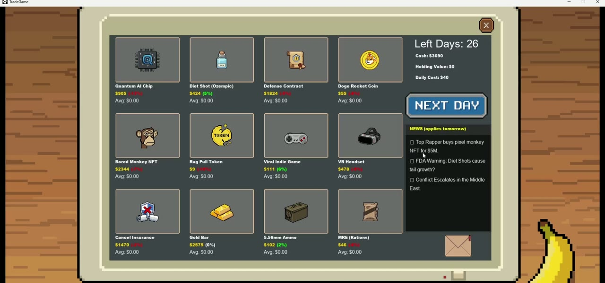
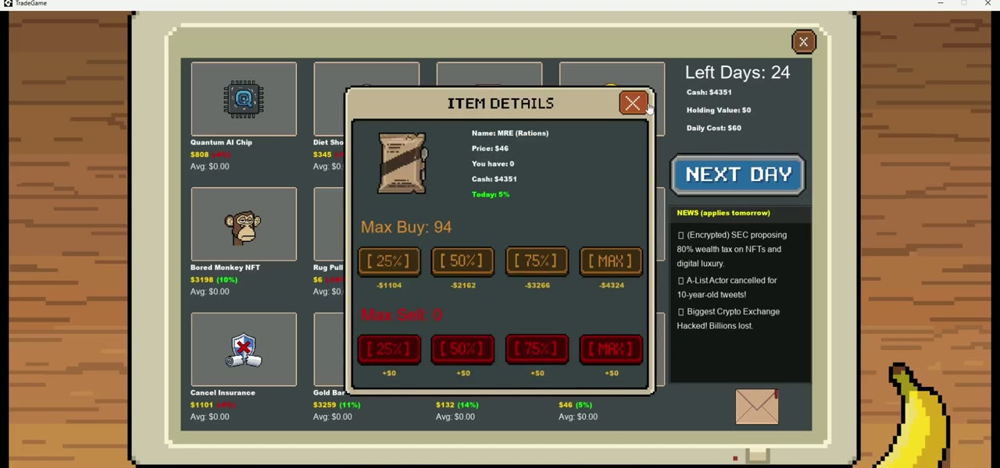
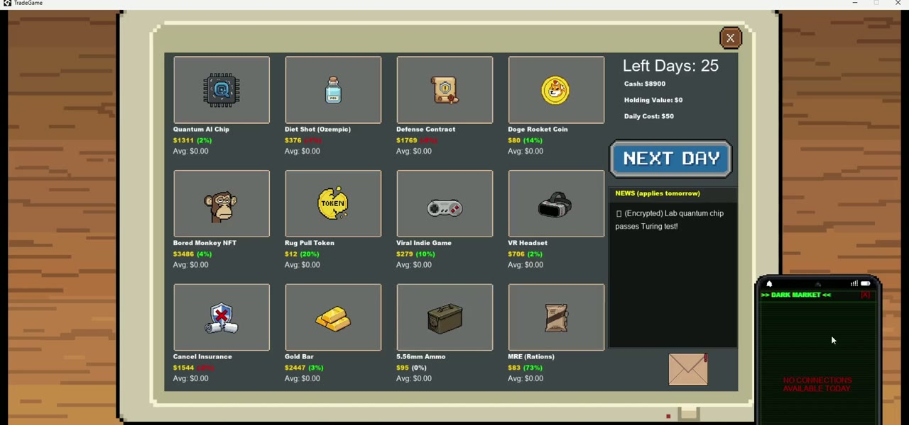

Design goals设计目标
Standing still costs money不动也在亏钱
The daily cost starts at $30 and grows every night. Holding cash is a slow loss, so every day asks for a decision.
每天的生活成本从 30 美元起步，每晚都涨。攥着现金就是慢慢亏，所以每一天都得做决定。
News you can read, and doubt新闻能读懂，也该怀疑
Tomorrow’s headlines are on screen today. Some hit once, some last for days, and some are rumors planted to trap you.
明天的新闻今天就能看到。有的只影响一天，有的持续好几天，还有的是专门骗人接盘的谣言。
The climb is the satire往上爬，就是讽刺本身
The richer you get, the more rules you are allowed to bend: a black market at $8,000 in total assets, a credit line at $15,000. The top ending calls you “the exact vampire you once hated.”
钱越多，能钻的空子越多：总资产到 8,000 美元开放黑市，到 15,000 美元给信用额度。最高一档的结局说，你变成了“自己曾经最讨厌的那种吸血鬼”。
One day, three steps一天三步
Read tomorrow’s news, trade, then press Next Day. The whole game runs on one screen, and a run takes 28 presses of that button.
看明天的新闻，交易，然后按“下一天”。整个游戏只有一个界面，一局就是按 28 次这个按钮。


The numbers关键数值
| Starting cash初始现金 | $3,720 |
|---|---|
| Daily cost每日成本 | $30 on day 1, then $10 more each night ($5 once you hold the credit line)第 1 天 30 美元，之后每晚加 10 美元（拿到信用额度后每晚加 5 美元） |
| News per day每天的新闻 | 2 to 5 headlines, shown a day ahead2 到 5 条，提前一天显示 |
| Black market opens黑市开放 | At $8,000 in total assets总资产达到 8,000 美元 |
| Credit line信用额度 | At $15,000 in total assets, cash may go $5,000 below zero总资产达到 15,000 美元后，现金可以透支 5,000 美元 |
| Length of a run一局长度 | 28 days28 天 |
What Next Day does按下“下一天”之后
- The daily cost comes out of your cash, then goes up for tomorrow.
- Every price moves: its own daily swing, plus the news that was shown the day before.
- If cash is below zero, your goods are sold off to cover it, the most expensive first. With the credit line, this starts at $5,000 below zero.
- Still short with nothing left to sell: the run ends.
- After day 28, your total assets decide the ending.
- 先从现金里扣掉当天的成本，明天的成本随即上调。
- 所有价格刷新：商品自身的日常波动，加上前一天预告的新闻影响。
- 现金低于零时，系统从最贵的商品开始强制卖出抵债；有信用额度的话，透支超过 5,000 美元才开始。
- 卖光了还是不够，这一局就结束。
- 第 28 天结束后，按总资产决定结局。
Four sectors, twelve goods四个板块，十二种商品
Each sector behaves differently, so where you put your money is a choice about how much risk to carry. Every good is a joke about something real.
每个板块的脾气不同，钱放在哪里，就是在选承担多大风险。每种商品都在影射现实里的某样东西。
- Wall Street and big industry. Quantum AI Chip, Diet Shot, Defense Contract华尔街与大企业。量子 AI 芯片、减肥神药、国防订单 Up to ±5% a day每天最多 ±5% Steady. Where cautious money sits. Moves on policy, tech and war headlines.稳。谨慎的钱放在这里，受政策、科技和战争新闻影响。
- Crypto casino. Doge Rocket Coin, Bored Monkey NFT, Rug Pull Token加密赌场。狗头火箭币、无聊猴 NFT、跑路代币 Up to ±25% a day每天最多 ±25% Wild. It can make a run or end one. The Rug Pull Token is the only good that can fall to zero.疯。能让你翻身，也能让你出局。跑路代币是唯一会归零的商品。
- Trends. Viral Indie Game, VR Headset, Cancel Insurance潮流。爆款独立游戏、VR 头显、取消文化保险 Up to ±10% a day每天最多 ±10% Driven by hype. Quiet until a headline lands, then it moves fast.靠热度驱动。平时安静，新闻一来就动得很快。
- Doomsday. Gold Bar, 5.56mm Ammo, MRE Rations末日储备。金条、5.56 毫米子弹、军用口粮 Up to ±5% a day每天最多 ±5% The hedge. Barely moves on a normal day, climbs on war and panic, and falls when peace breaks out.避险。平时几乎不动，战争和恐慌时上涨，世界和平时下跌。
Three kinds of news三种新闻
Each day draws 2 to 5 headlines from a pool of 35 and shows them a day early.
每天从 35 条里抽 2 到 5 条，提前一天显示。
- Sudden (10). Hits for one day, then it’s over.
- Ongoing (10). Keeps pushing the same goods for several days.
- Rumor (15). Promises a big rise, but each has a set chance of being a scam. If it is, the price goes the other way.
- On top of these, there is a small chance each night of a black swan: one extra event with no warning.
- 突发（10 条）。只影响一天。
- 持续（10 条）。连续几天推动同一批商品。
- 谣言（15 条）。许诺大涨，但每条都有固定的概率是骗局；是骗局的话，价格反着走。
- 此外，每晚有很小的概率出现黑天鹅：一条没有预告的额外事件。
Tags do the matching用标签配对
Every good carries two tags, such as Tech and Bubble, or Crypto and Scam. Every headline names the tags it hits. A new good or event only needs the right tags to join the system.
每种商品带两个标签，比如“科技”和“泡沫”，或“加密”和“骗局”。每条新闻写明它影响哪些标签。以后加新商品或新事件，只要标签对上就能接进系统。
- “Conflict Escalates in the Middle East.” Hits War, Gold, Safe and Preppers for four days, +10% to +20% a day. Defense Contract, Gold Bar and 5.56mm Ammo climb.
- “Historic Moment: Global Peace Treaty Signed!” Hits Safe, War and Preppers for one day, −20% to −10%. The same three goods fall.
- “中东冲突升级。”连续四天影响“战争”“黄金”“避险”“末日储备”标签，每天 +10% 到 +20%。国防订单、金条和 5.56 毫米子弹上涨。
- “历史性时刻：全球和平条约签署！”影响“避险”“战争”“末日储备”标签一天，−20% 到 −10%。同样这三种商品下跌。
How a price moves价格怎么动
Every good has its own daily range. A headline adds a second range on top. The game adds the two together and rolls once inside the result. Strong news settles the direction, and the size stays a gamble.
每种商品有自己的日常波动区间，新闻再叠加一个区间。游戏把两个区间相加，在结果里随机取一次。够强的新闻能定下方向，涨跌多少仍然要赌。
Rules that keep prices in bounds防止价格失控的规则
- Trends. Without news, a good drifts one way for 2 to 4 days, then picks a new direction.
- Pull to base. More than 30% away from its base price, a good is pulled back, harder the further it has gone.
- Rebound. A crash of 38% or more in one day sets up a bounce the next day.
- Ceiling. No price passes 5 times its base, or 15 times for crypto. A good that touches the ceiling turns down.
- Soft floor. Below 15% of its base price, each drop is cushioned. Bad news can still push a price down to 5% of base. The one exception is the Rug Pull Token, which can hit zero.
- 趋势。没有新闻时，商品朝一个方向走 2 到 4 天，再重新选方向。
- 向基础价回归。偏离基础价超过 30% 后会被往回拉，偏得越远拉得越狠。
- 反弹。单日暴跌 38% 以上，第二天会有一次反弹。
- 价格上限。任何价格不超过基础价的 5 倍，加密类是 15 倍；碰到上限就掉头。
- 软下限。跌破基础价的 15% 后，跌幅会被缓冲；但坏消息仍能把价格压到基础价的 5%。唯一的例外是跑路代币，它可以直接归零。
The climb向上爬
Progress in this game means getting access to worse behavior. Each step up changes what the player is allowed to do to the market.
在这个游戏里，进步的意思是能做更坏的事。每上一级，玩家能对市场动的手脚就多一些。
- Botnet Targeter. Fee: 25% of your cash, at least $1,500僵尸网络。费用：现金的 25%，最低 1,500 美元 Manipulation操纵 Crash one good by about 70% tomorrow, so you can buy it cheap. The day after, it rebounds to more than double the crashed price.让一种商品明天暴跌约 70%，方便你抄底；后天它会涨回暴跌价的两倍以上。
- Blood Money. No fee血债。不收费 Debt借债 $5,000 now for a $7,500 debt. If your total assets ever fall below the debt, the run ends.马上拿到 5,000 美元，背上 7,500 美元的债。总资产一旦低于这笔债，这一局就结束。
- Mixer Escrow. $300混币托管。300 美元 Gamble押注 Sell your best holding for 160% of its price. The money is locked for two days, with a 30% chance it never comes back.把最值钱的持仓按 160% 的价格卖出。钱锁两天，有 30% 的概率拿不回来。
- Insider Tip. $800内幕消息。800 美元 Information情报 Shows whether one of tomorrow’s rumors is real.告诉你明天的一条谣言是真是假。
- Exit Liquidity. $2,000出货通道。2,000 美元 Escape脱身 Sell every holding tagged Crypto or Meme at 130% of the current price.把手上所有带“加密”或“迷因”标签的持仓，按现价的 130% 卖出。
The black card. At $15,000 in total assets the game hands you a credit line: cash can go $5,000 below zero before anything is sold off, and the daily cost grows half as fast. It also takes 1.5% of your cash every night, so holding money still costs you.
黑卡。总资产到 15,000 美元，游戏给你一条信用额度：现金可以透支 5,000 美元才会被强制卖出，每日成本的涨速也减半。但它每晚还会抽走现金的 1.5%，所以攥着钱照样在亏。

Three endings三个结局
| Under $20,000不到 20,000 美元 | Debt Slave. You survived, and the tax office takes the rest.债务奴隶。你活下来了，剩下的归税务局。 |
|---|---|
| $20,000 to $49,99920,000 到 49,999 美元 | Offshore Account. Enough to disappear to a tax haven.离岸账户。够你躲去避税天堂。 |
| $50,000 or more50,000 美元以上 | Capital Leviathan. You learned to move the market yourself, “becoming the exact vampire you once hated.”资本巨鳄。你学会了自己操纵市场，“变成了自己曾经最讨厌的那种吸血鬼”。 |
A run can also end early: out of cash with nothing to sell, or total assets below a Blood Money debt.
一局也可能提前结束：现金为负又没东西可卖，或者总资产低于“血债”。
Iteration迭代
Five changes from the semester, each from a problem that showed up once the game was playable.
学期里的五处改动，每一处都来自游戏能玩之后才暴露的问题。
- In my first spec, a headline changed the chance of a rise, from 50% to 80%. Players couldn’t tell how big the move would be, and good news could still lose them money.第一版规格里，新闻改变的是上涨的概率，比如从 50% 提到 80%。玩家看不出会涨多少，好消息也可能让他们亏钱。 Readable news新闻要读得懂 Ranges instead of chances, as in the chart above. Strong news now settles the direction, and only the size is left to luck.把概率换成上面那张图里的区间叠加。够强的新闻现在能定下方向，只有涨跌多少还看运气。
- Bills were fixed: $100 a day, $1,000 rent each week, a $5,000 loan due on day 28. A player could sit on cash for two weeks, and the run came down to one final check.账单是固定的：每天 100 美元、每周房租 1,000 美元、第 28 天还 5,000 美元贷款。玩家可以攥着现金撑两周，一整局的胜负只看最后一次结算。 Pressure every day每天都有压力 One daily cost that starts at $30 and rises every night. The ending is read from total assets, in three tiers.只留一项每日成本，从 30 美元起步，每晚上涨。结局改成按总资产分三档。
- With trends and stacked news, a price could run far from where it started and never come back.趋势加上叠加的新闻，价格可以一路跑偏，再也回不来。 Prices come back价格要能回来 Added the pull toward base past 30%, and a ceiling on how high a price can climb.加上偏离 30% 后的回归拉力，再给价格设一个上限。
- A hard floor at 15% of base made the bottom safe. Bad news stopped mattering once a good reached it.基础价 15% 处的硬下限让底部变得安全：商品跌到这里，坏消息就不起作用了。 No safe bottom底部不能是安全区 Replaced it with the soft floor, so bad news still hurts at the bottom.换成软下限，底部照样怕坏消息。
- In team playtests, a black swan (a random event with no warning) hit three days in a row.团队试玩时，“黑天鹅”（没有预告的随机事件）连续三天触发。 Rare means rare罕见就该真的罕见 A teammate cut the chance to about 4% a night. I changed it to add to the day’s news, where it used to replace headlines the player had already read.队友把概率降到每晚约 4%。我把它改成在当天的新闻之外追加；原来它会顶掉玩家已经读过的新闻。
What I would push next. The project scored 59 out of 60 and was selected for the program showcase. Looking back, the mechanics could say more about manipulation, power and class: the black market and the black card point that way, and the daily trading mostly does not. That is where I would take the design next.
接下来我想往哪里推。这个项目得了 59/60，并入选学院作品展。回头看，机制本身还可以更多地讲操纵、权力和阶层：黑市和黑卡在往这个方向走，日常的买卖基本没有。这是我接下来想继续做的方向。
How I worked工作方式
We were four: an artist, a producer, an engineer, and me on systems. I started with written specs inside the project (data structures, formulas, and the price update step by step) so the engineer could build without guessing. Once the game ran, I tuned values and added rules directly in GameMaker, and we tested each change by playing full runs.
我们一共四个人：美术、制作人、程序，我负责系统。一开始我把规格写进工程里（数据结构、公式、价格刷新的每一步），让程序不用猜就能实现。游戏跑起来之后，我直接在 GameMaker 里调数值、加规则，每次改动都靠完整地玩一局来验证。
STEP 1: GET BASE RANGE
- Retrieve the item's static volatility range.
- Example: Stock A = [-5, 5] (Can drop 5% or rise 5%)
STEP 2: APPLY EVENT MODIFIERS
- Loop through all ACTIVE events.
- If Event_Tag matches Item_Tag -> Add Event Range to Base Range.
Final_Min = Base_Min + Event_Min_Mod
Final_Max = Base_Max + Event_Max_Mod
- Example: Base [-5, 5] + Event [+10, +20] = Final Range [+5, +25]
STEP 3: ROLL THE DICE
- Pick a random percentage from [Final_Min, Final_Max].
STEP 4: UPDATE PRICE
- New_Price = Old_Price * (1 + Percent_Change / 100)
Level design work关卡设计作品
Exposure曝光
First-person photo puzzle level, single-player第一人称拍照解谜关卡，单人
Read the case study 看完整拆解